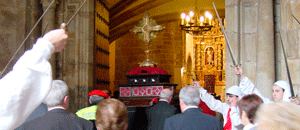
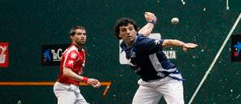
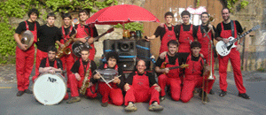

|
 |
| MAIATZAK 3 MAYO | |
9:30 |
Iruñeko Ezpelur gaitero taldearen goiz deia. |
11:00 |
Mirandaolako Gurutze Santuaren prozesioa Eliza-atarian txistulari eta ezpata-dantzariz lagundurik. Ondoren Meza Nagusia Jasokunde Amaren Eliza Nagusian, Santikutz abesbatzak kantatua.  Procesión de la Santa Cruz de Mirandaola en el pórtico de la parroquia acompañada de txistularis y ezpata-dantzaris. A continuación solemne misa mayor en la Parroquia Nuestra Señora de la Asunción, con la participación de Santikutz Abesbatza. |
12:00 |
Olaria saridunen eta Udal Korporazioaren irteera Udaletxetik Euskal Herria plazara
ohorezko arkupean eta Legazpiko Ezpata-dantza ekitaldia Euskal Herria plazan. |
14:00 |
Larrain dantza herrikoia Kale Nagusian Ezpelur gaiteroekin Sustraiak dantza taldearen gidaritzarekin |
17:30 |
Profesional mailako pilota partidak Urbeltz Pilotalekuan  |
18:00 |
Buruhandi eta Erraldoien kalejira Urolatarrak Txarangarekin. Txarangak kalez kale
jarraituko du 20:30ak arte. |
19:00 |
Bertsolari titiriteroak kalez kale eta tabernaz taberna, Bertso Olariak Elkartearen eskutik. |
23:00 |
Patxaranga 13 Elektrotxarangaren emanaldia kalez kale.  Actuación de Patxaranga 13 en las calles del centro. |
 |
15:30GAZTE BATZARRA TXOZNAN, AULKITAN ESERITA NOSKI. NAHIDONAK KANPIN DENDA |
17:30HERRI KIROLAK KALEAN ZEHAR HASIERA TXOZNAN EMANGO ZAIO ETA KALEAN |
20:30PINTXO ETA SAGARDO DASTAKETA GAZTETXEAN "DEBALDE/GRATIS/DOHAIN/FREE" |
¿?:00PATXARANGAREKIN GAZTETXEAN BUKATU ETA ONDOREN…KARAOKEA! |